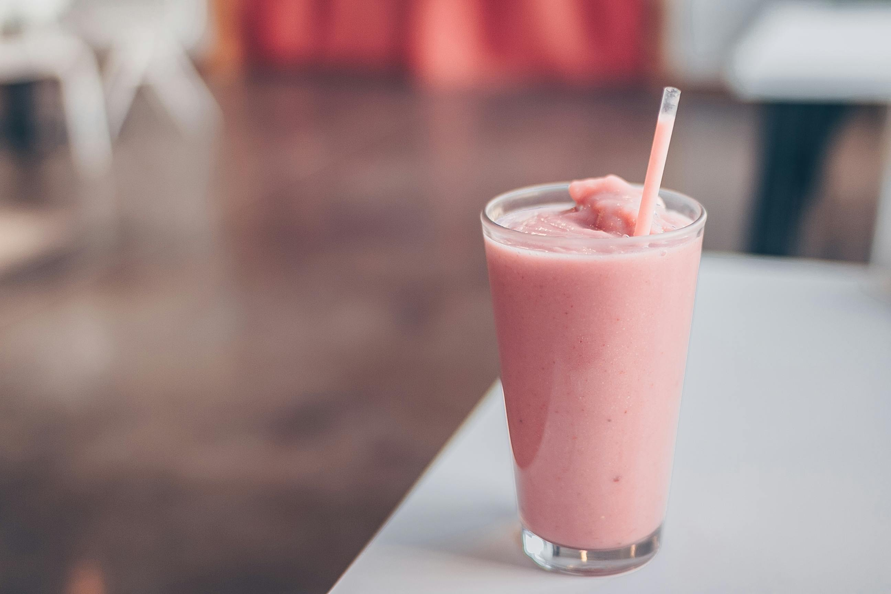

Strawberry oatmeal is a vibrant, heart-healthy breakfast that infuses classic porridge with the natural sweetness and bright acidity of fresh or cooked strawberries.
It is favored for its balance of creamy textures and "pop" of fruit flavor.